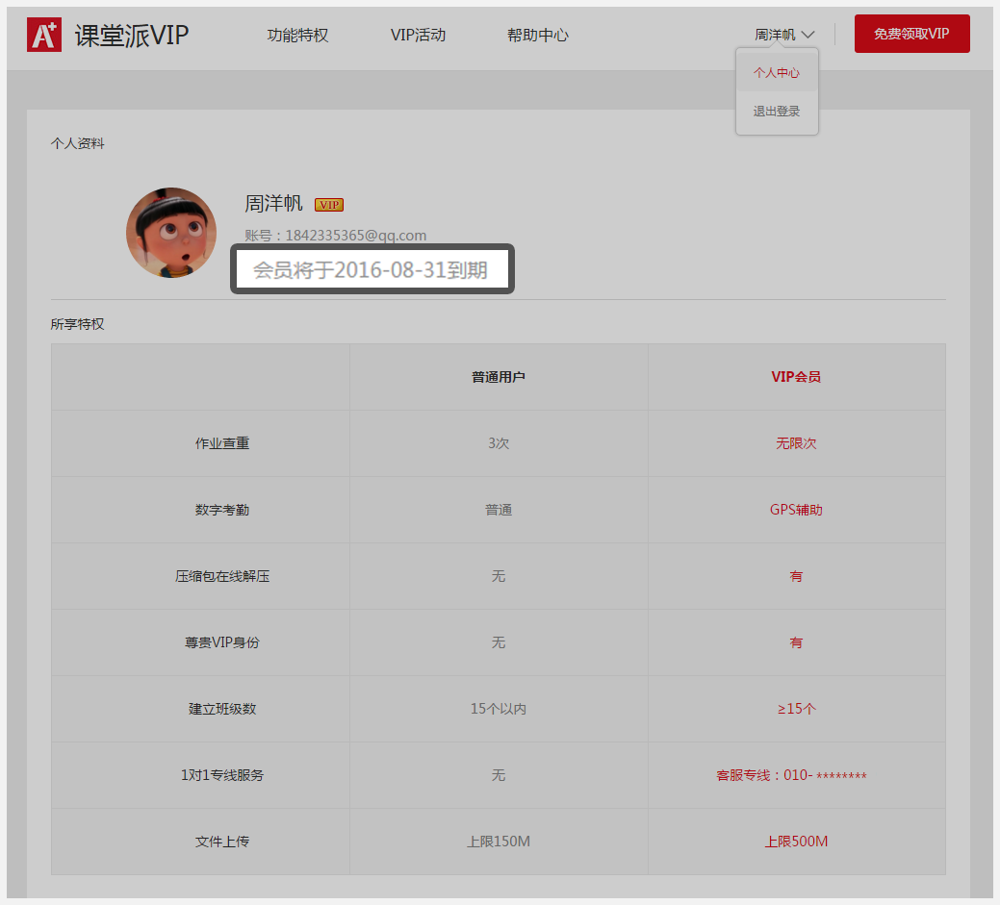

课堂派VIP是课堂派为用户提供的增值服务，为您提供更多更优质的课堂管理服务，在免费享受轻松管理课堂的体验外，还可享更顺畅、更便捷、更贴心的会员服务。
VIP特权中包含无限次创建班级、无限次作业查重、大文件上传、云解压、专线服务等，更多增值服务正在不断丰富中……
进入『课堂派VIP』首页，使用课堂派账号登录后，点击用户名进入『个人中心』页面，在个人信息的右侧，展示着距离会员到期的时间，会员到期后会自然终止。如下图所示
课堂派会员有效期以自然月、年计算。
"一个月的有效期是按自然月计算，如果该日期在下一月不存在，则将下一月的最后一天视为到期日，例如：您于2015-1-12领取了一个月的VIP，则可使用至2015-2-12 23:59:59；如果您于2015-1-30领取了一个月的VIP，则可使用至2015-2-28 23:59:59。"
一年的有效期是按自然年计算，如果该日期在下一年不存在，则将下一年该月的最后一天视为到期日，例如：您于2015-1-12领取了一年的VIP，则可使用至2016-1-12 23:59:59；如果您于2016-2-29领取了一年的VIP，则可使用至2017-2-28 23:59:59。
会员到期后会自然终止。
开通方法：
第一步：登录课堂派（http：//www.ketangpai.com），点击左上角“会员”进入会员页面，使用你的课堂派账号进行登录，如果没有课堂派账号，请从这里注册
第二步：点击“开通VIP”，进入会员购买信息确认页，选择开通时长以及支付方式，核对金额后，点击“确认开通”。
第三步：根据页面提示完成剩余的付款操作。
第四步：开通成功！
对应的支付方式包括：支付宝支付、微信支付
购买的课堂派会员到期后，您可以自由选择是否续费。如果不续费，到截止日期时会员特权会自然终止；如果续费，您需要进入『课堂派VIP』首页，使用课堂派账号登录后，点击用户名右侧的“续费VIP”按钮，进行续费操作。
例如您在2015-06-15日购买了一个月课堂派会员，即在2015-07-15日到期；续费将课堂派会员有效期按自然月顺延。
提示：在超过有效期后，仍需继续使用课堂派会员特权的用户，需要重新购买会员。此操作不会对历史数据产生任何影响。
正常情况下，您只要通过在线充值缴费开通会员成功后，系统将立即会为您开通服务，中间可能会有2～3秒的延迟，但不影响您的正常使用。您可以在付费后刷新页面或重新登录，便可以查看您的课堂派会员是否已经顺利开通。
极少数会出现支付已经扣款，但会员没有加上这种情况。如果遇到这种情况，请及时与我们联系！我们将会人工进行审核处理。
客服联系方式：
1、PC端联系在线客服（灰灰课堂派后援团：487598976）
2、客服电话：（周一至周六10:00-19:00）
由于微信钱包或支付宝余额不足、网络故障、手机信号等原因，会导致系统提示支付失败，在这种情况下，将不会从您的微信钱包或支付宝中扣除费用。如果已经扣款，且在1个工作日内没有显示会员标志，请与我们的客服联系。
客服联系方式：
1、PC端联系在线客服（灰灰课堂派后援团：487598976）
2、客服电话：（周一至周六10:00-19:00）
购买课堂派VIP一个月会提供30次下载次数，有效期内可下载任意文档30次，同一文档多次下载仅消耗一次下载次数。
VIP下载特权按31天的时间间隔发放，在课堂派VIP购买成功后发放首月的下载次数，之后每31天发放一次；下载特权有效期为发放当日起31天。